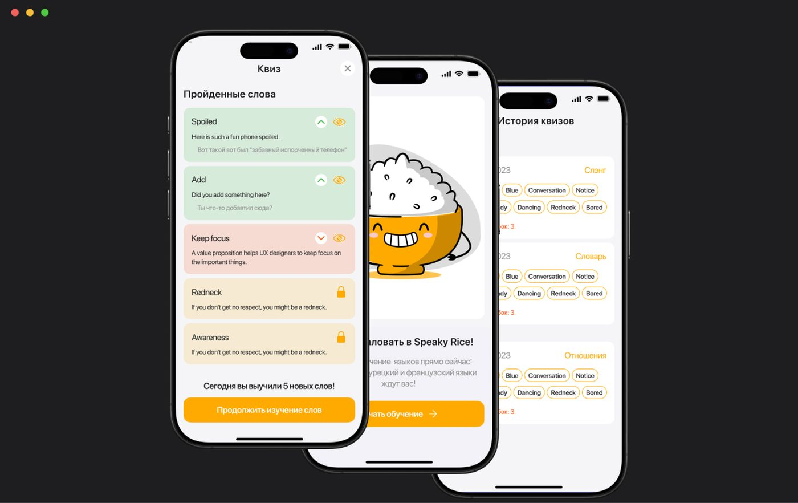

SpeakyRice — мобильное приложение для изучения иностранных слов через собственный словарь и интервальные повторения. Пользователь самостоятельно добавляет нужные слова, объединяет их в коллекции и повторяет материал через квизы и карточки. В приложении также предусмотрены автоматический перевод, транскрипции, напоминания и виджет прогресса.
При изучении языка пользователю часто приходится работать одновременно с разными источниками: переводчиками, заметками, словарями и отдельными сервисами для повторения. Из-за этого новые слова теряются, а повторение не связано непосредственно с тем словарём, который пользователь собирает под свои задачи.
Создать простой инструмент, в котором пользователь может быстро добавить нужное слово, получить перевод, сохранить его в собственный словарь и возвращаться к нему в нужный момент.
Спроектирован ключевой пользовательский сценарий вокруг собственного словаря: добавление нового слова → получение перевода → сохранение → распределение по коллекциям → повторение.
Для обучения использован механизм интервальных повторений, а повторение реализовано через несколько форматов заданий, включая выбор перевода, составление слова и проверку правописания. Для возвращения пользователя к обучению предусмотрены напоминания и виджет прогресса.
Дополнительно проработаны состояния изучения слова, коллекции для разных целей и сценарий повторного изучения уже освоенного материала. В последующих версиях продукт развивался в сторону более удобного контроля прогресса и accessibility.
Создан компактный продуктовый цикл: